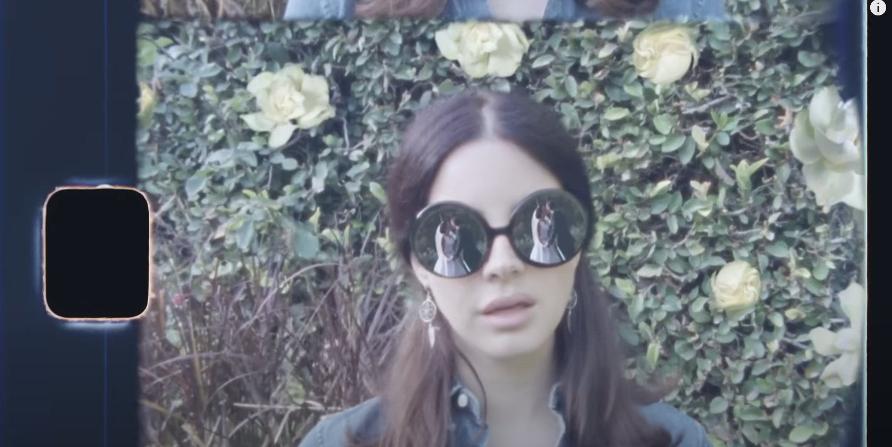

Critical Reflection & Feminism in Norman Fucking Rockwell (NFR)!
“Norman fucking Rockwell,” the title track from Lana’s fifth major-label studio album Norman Fucking Rockwell! (2019), expounds upon, again, a disappointing relationship, as Lana seems to have "...such a total, non-moralistic, and in many ways uncompromising focus...” when it comes to desire for another, even if they are a subpar partner (Grande 195-196). However, the song also illustrates Lana’s acknowledgement of the shortcomings of the relationship, like in “Pretty When You Cry.” Due to these shortcomings, Lana actively chooses to distance herself from the man in question, illustrating her gradual character progression from the earlier albums. Thus, through an introspection of Lana’s signature “Sad Girl” aesthetic, not only does Lana reinforce her role as a realistic illustrator of her past toxic relationships, but with this reflection, she has also grown to have a more self-aware and feminist outlook.
In “Norman fucking Rockwell,” Lana addresses a romantic partner who is self-absorbed, despite their talents. Although Lana seems to have some sort of affection for their complexities, as she always does, she also chooses to distance herself from their immaturity. In her usual melancholic ballad, accompanied with soothing strings, Lana sings:
"Goddamn, man child
You fucked me so good that I almost said 'I love you',"
("Norman fucking Rockwell" 0:38-0:49).
Whilst singing this, Lana is seen playing the piano, possibly in her home. It looks as if she is being recorded with a vintage camcorder. When observing this and listening to her usual serene tone, rather than this song being a reflection on the past or a fictional reality, I believe Lana is venting her current situation through a video diary. She is expressing her concerns and trying to weigh the good versus the bad.
This is further exemplified during 1:24-1:50, where Lana is seen wearing glasses that display images of seemingly happy couples. However, when venting about her love, she takes off the glasses, symbolizing her clarity in the fact that this relationship, like many of her others, is flawed. She can either choose to move on or accept the fact that not all relationships are perfect. Lana simply realizing that she does have a choice in this situation illustrates a sense of self-awareness that was missing in her past albums, allowing for others in her situation to realize that it does get better.
With an exploration of Lana’s critical reflection on both her past and present relationship, a sense of feminism seems to rise. In fact, her definition of a feminist is “...a woman who feels free enough to do whatever she wants,” according to Galant Nanta Adhitya and Nadia Lasari’s article, titled “Desiring Domination: A Postfeminist Study on the Lyrics of Lana Del Rey’s Ultraviolence Album,” (Adhitya & Lasari 44). Lana toys with the fact that she has control in this relationship, a stark contrast to the relationships described in Born to Die and Ultraviolence. Therefore, NFR! serves as an important point in Lana’s career; regardless of how the public feels about her past depictions of domestic violence, it is clear that she has matured as a person.
Credits: Website Template: https://github.com/yenchiah/project-website-template / Images/videos are sourced from myself, Lana Del Rey's works, or a combination of both! / Bibliography: README File on GitHub